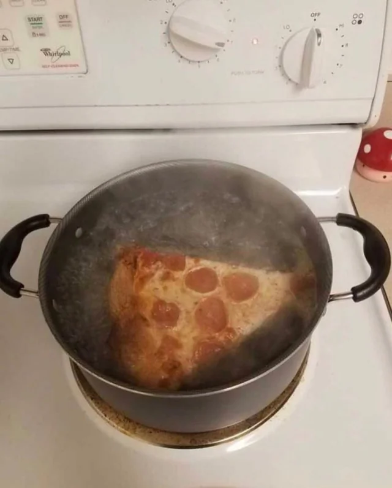

Boiled Pizza

This pepperoni pizza recipe produces a quick and easy classic! Delicious homemade pizza crust and tomato sauce have
never been easier.
Ingredients
- 1 slice of Domino's Pizza
- 750ml water
- 1 Boiling pan
- Crippling depression
Steps
- You need to
- Put water into pan. Boil water for about 5-10 minutes.
- Place slice of pizza into pan. Make sure to throw it at a 92 PSI throwing force.
- Boil pizza for 5 minutes.
- After 5 minutes is done, take out and reflect if morality is a construct or inherent in human nature.
Back